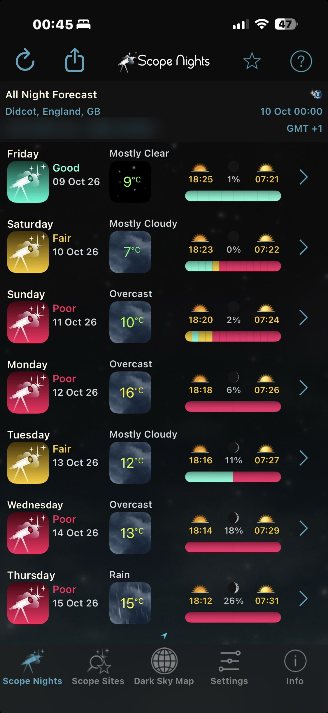

How it works · part 1 of 2
Control and planning
A smart telescope is designed to be driven from a phone app. Here, Claude drives it instead: it points, focuses, tracks and shoots all night from a plan, and works out what the garden can actually see before it makes that plan.
I'm new to astrophotography, and most of what follows is software Claude wrote over a few days, with me carrying the tripod, answering questions about the garden and approving the bigger decisions. As far as I can tell, very few people are running a telescope this way, so this page explains how it fits together.
The kit
- Telescope
- Seestar S30 Pro
- Focal length
- 160 mm
- Sensor
- 3840 × 2160, 2.9 µm
- Field of view
- 4.0° × 2.2°
- Filters
- IR-cut, dual-band
- Mount
- TH10 wedge (EQ)
The S30 Pro has two cameras: the main telephoto camera that takes the pictures, and a wide-angle camera covering about 54° of sky. That second camera turned out to be very useful, as you'll see below.
Talking to the telescope
The Seestar firmware includes an ASCOM Alpaca server: a standard astronomy control interface that answers ordinary web requests on the home network. Through it Claude can slew the mount, run both cameras, move the focuser, change filters and switch the dew heater. The phone app is only needed for two jobs: joining the scope to the home Wi-Fi, and polar alignment.
On top of Alpaca, Claude wrote a Python toolkit called seestarctl. Its pieces map onto what a human astrophotographer does by hand:
- Pointing. Slew to a target, take a short exposure, plate-solve it (match the star pattern against a star catalogue to find exactly where the scope is pointing) and nudge until the target is centred. Each solve takes under a second. A safety check refuses any target within 30° of the Sun.
- Autofocus. Step the focuser through focus, measure how big the stars are at each step, fit a V-shaped curve and settle at the bottom of it (chart below).
- Capturing. Stream each frame straight off the telescope as a FITS file, with a small random "dither" nudge every few frames so noise patterns don't line up when the frames are stacked.
- Watching the sky. Count the stars in every frame. A sudden drop means cloud, so capture pauses and resumes when the stars come back.
Calibration lessons
A few things had to be measured rather than taken on trust:
- Colour. The camera reports its colour-filter pattern as RGGB. Star colours in the first test images showed it is actually GRBG in the way we read the frames. Getting this wrong gave green and magenta stars, then a mirror-image result. Both are fixed and checked against a raw frame.
- Gain. The default gain of 80 with 10-second exposures was limited by the camera's own read noise. Gain 200 with 20–30 second exposures gives far cleaner data.
- Dithering rate. The guide pulses move the mount at about 75 arcseconds per second, measured by plate-solving before and after each pulse.
- Polar alignment. The app's routine needs clear sky overhead. Under cloud it reported a 103° error. Once the sky cleared, the same setup read 0.7°.
What can the garden actually see?
The garden sits in a residential street. A three-storey house fills the south, with neighbours' roofs all around. A planner that only knows the latitude would happily schedule targets hidden behind a house, so the skyline was measured in three steps.
- GPS position. I gave Claude the garden's coordinates from a map pin. They set the sky calculations (where every object will be, minute by minute) and are stored in the telescope too.
- Building heights from maps. Claude pulled the outlines and heights of nearby buildings from OpenStreetMap and ray-cast from the garden to estimate how high each roof reaches at each compass bearing. This gave a useful first draft, but it was wrong in places: it said a garage blocked the Plough, which I could see clearly from the garden.
- A camera survey. So Claude used the telescope itself. It turned the wide-angle camera to twelve compass bearings, 30° apart, took a picture at each, and found where the rooftops end and the sky begins. Plate-solving the stars just above each roofline gave exact bearings and altitudes.
The result is a measured horizon for every degree of the compass:
Choosing the night
Deciding whether to set up is still my job. I use the Scope Nights app on my iPhone, which rates each night for astronomy from the cloud, transparency and Moon forecasts. Once I've picked a night, Claude takes over the detail. On the night it also checks three weather models side by side (the Met Office, the European ECMWF and the German ICON model), because they often disagree about patchy low cloud. If the sky looks doubtful, it uses the telescope's wide-angle camera to look at the real sky and counts the stars.

Turning the skyline into a plan
The planner combines four things for every target in its catalogue of about seventy objects: when it is dark enough (Sun more than 12° below the horizon), where the target will be across the night, the measured skyline with a 2° safety margin, and where the Moon is. From that it works out each target's usable window, then suggests exposure settings and filter choice for the kind of object it is. Emission nebulae get the dual-band filter. Galaxies and star clusters don't.
Each night is written as a short plan file that the overnight runner follows. This is Friday's:
[[target]]
name = "NGC 6992" # Veil Nebula (East)
start = "20:30"
end = "00:30"
exposure = 30 # seconds per frame
gain = 200
filter = "lp" # dual-band: H-alpha + O-III
[[target]]
name = "M45" # Pleiades
start = "00:30"
end = "05:25"
gain = 100 # bright stars, lower gain
filter = "ir"
min_alt = 30The overnight runner
Once I've polar-aligned and closed the phone app, Claude starts the runner and I go to bed. For each target it waits for darkness and for the target to clear the skyline, then centres, focuses and captures. Every 30 minutes it re-centres. Every hour, or when the temperature drifts, it refocuses. It sends a progress message to my phone each hour. At the end it takes dark frames, parks the scope and leaves the dew heater on.
Lessons from night four: keeping the scope awake
On 11 October the scope powered itself off while the runner waited for darkness. The runner had been polling it over Alpaca every minute and taking a short test frame every two minutes, on the theory that activity would keep it awake. It didn't. The Seestar's Auto Shut Down setting counts only the phone app as activity, so Alpaca traffic doesn't reset its timer. The fix was the toggle itself, now off. The lesson for Claude was to stop calling a keepalive "working" until it has survived a real idle test end to end.
The restart showed a second problem. The first frames had stars stretched about nine times longer than they were wide. My first guess was that the mount had lost its setup when it powered down. The real cause was simpler. The app's polar-alignment check showed the wedge about 7° off, and correcting it to 0.0° and 0.2° made every frame round. A 7° error drags a star about 37 arcseconds, roughly 10 pixels, across a 20-second exposure, which matches the trails. Nothing had been moved since Saturday, so Saturday's alignment was probably several degrees out too, despite the app reporting under 1°. Saturday's re-centring backs that up: the target drifted about 1.3 arcminutes a minute that night, against about 0.5 after Sunday's fix. The lesson is to measure drift in the first few minutes of a night rather than trust the alignment figure, and building a star-shape check into the runner is on the list.
Alpaca can't read or change settings such as auto shut-down. The Seestar's own control channel, a JSON protocol on port 4700, can, and on current firmware it only accepts clients that sign a challenge with the same key the phone app uses. That handshake now works from the toolkit, and the first read confirmed the auto shut-down setting is off. The next step is to drive the scope over that channel too, and to add the same heartbeat the app sends, then prove it with an hour's idle test.
Processing had a smaller lesson. The office PC treats a session as finished once no new frames have arrived for ten minutes, so a long cloud pause made it process the night at 02:36, before the last frames and the darks existed. The morning run threw that version away and processed the full night again.
The physical setup and polar alignment are still done by hand. Everything from "the scope is aligned" to "the pictures are on my phone" is automated.